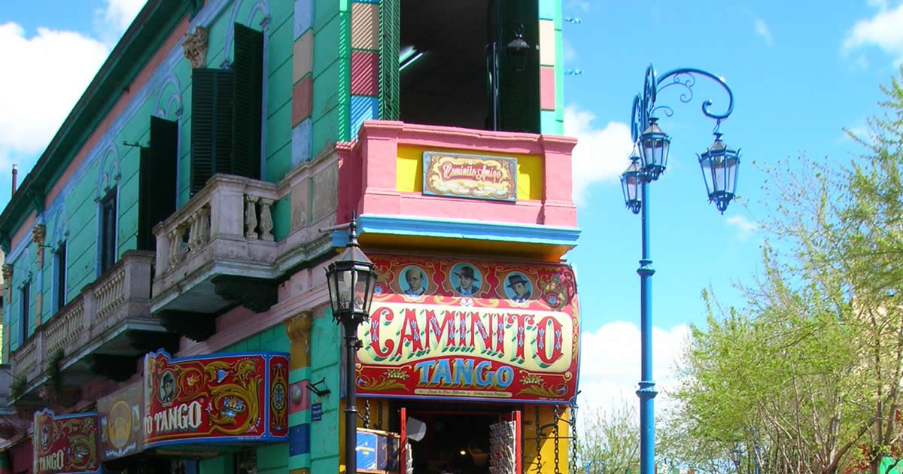
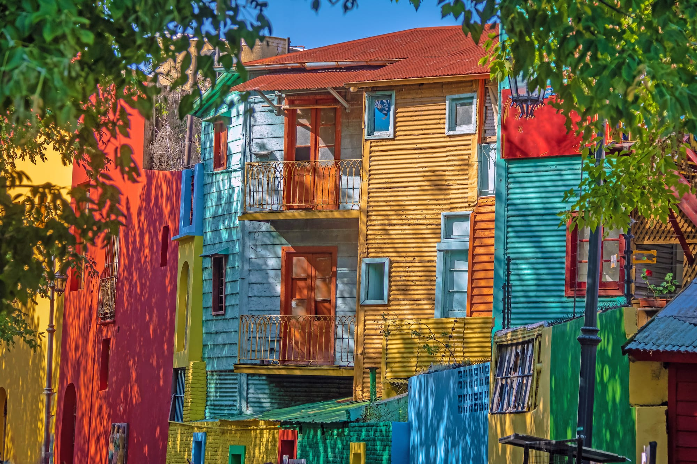
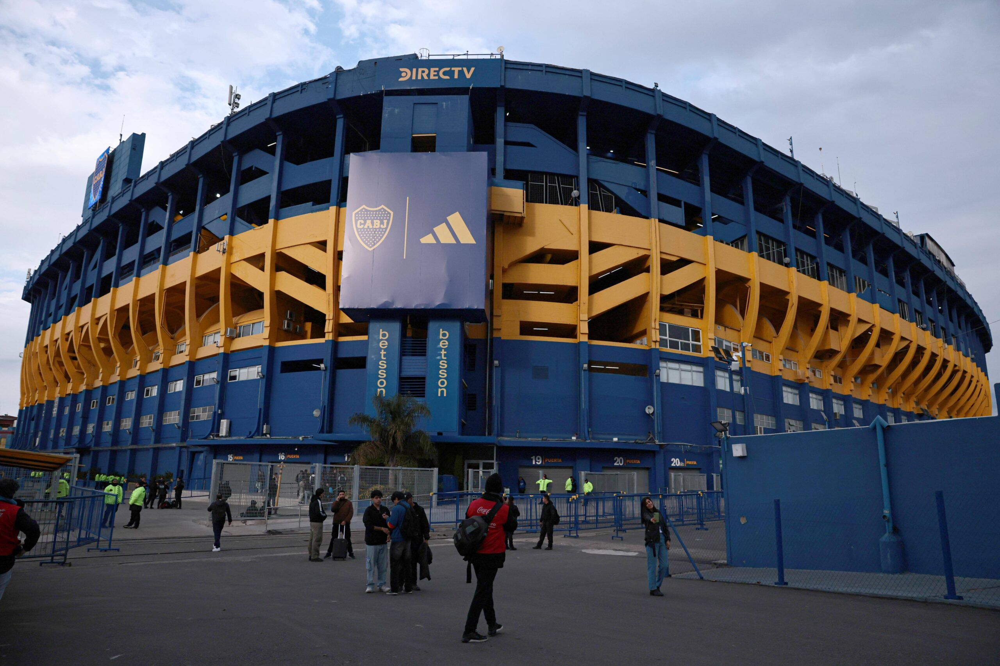

El barrio de La Boca

La Boca es un barrio lleno de color, historia y pasión que cautiva a cada visitante con su encanto único. Desde sus icónicos conventillos hasta el emblemático estadio de Boca Juniors, este rincón de Buenos Aires es un verdadero tesoro cultural que no puede dejar de explorarse.
El origen de La Boca se remonta a los primeros días de la fundación de la ciudad, cuando se estableció como un puerto vital en la desembocadura del Riachuelo en el Río de la Plata. Durante siglos, este lugar fue testigo del movimiento de barcos y comerciantes que llegaban a sus costas, atrayendo a numerosos inmigrantes en busca de nuevas oportunidades.
Las casas de madera y chapa de La Boca fueron construidas sobre pilotes y pintadas con los colores sobrantes de los astilleros. Con el paso del tiempo, estas viviendas se transformaron en uno de los símbolos más representativos del barrio y de la ciudad de Buenos Aires.
Caminito y La Bombonera
Caminito es un famoso museo a cielo abierto y pasaje peatonal de 150 metros en el barrio de La Boca, reconocido por sus coloridos conventillos de chapa y su historia ligada a los inmigrantes italianos.
Es un ícono turístico con artesanías, parejas de tango y restaurantes, famoso por la canción homónima.
En las calles de Caminito se puede encontrar una verdadera explosión de colores y expresiones artísticas. Artistas callejeros, músicos y bailarines de tango llenan el ambiente de energía y
convierten el paseo en una experiencia cultural muy característica de la ciudad.

El estadio La Bombonera, hogar del club Boca Juniors, es otro de los grandes atractivos del barrio. Miles de turistas y fanáticos del fútbol visitan el lugar para conocer su historia y vivir la pasión que caracteriza al fútbol argentino.

La Bombonera es uno de los estadios de fútbol más famosos de Argentina y su nombre oficial es Estadio Alberto J. Armando.
El estadio fue inaugurado el 25 de mayo de 1940 y desde entonces se convirtió en uno de los símbolos más importantes del fútbol argentino.
A lo largo de su historia recibió importantes partidos nacionales e internacionales.